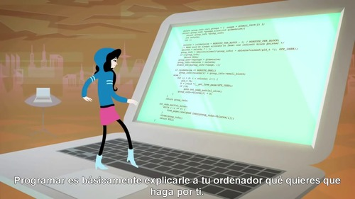

Definitivamente la tecnología juega un papel esencial en nuestras vidas, pero hay gente investigando como sacarle provecho al tiempo que invertimos en ella. Tal es el caso de Luis Von Ahn, quién actualmente es profesor de la Ingeniería de Ciencias de la Computación en la Carnegie Mellon University de los Estados Unidos.
De origen guatemalteco, Von Ahn, es el creador de Captcha y reCaptcha los cuales son tests diseñados para diferenciar un humano de una IA, que impide el spam en los registros y que a través de las palabras escritas por los humanos, se contribuye a la digitalización de millones de libros. Actualmente se encuentra trabajando en un proyecto llamado Doulingo que tiene como objetivo que millones de personas aprendan otros idiomas de forma gratuita y al mismo tiempo ayudan a traducir el contenido de Internet a otros idiomas.
Sorprende el emprendimiento de este joven guatemalteco, dedicado al 100% a su visión, aunque con el dinero de la venta de sus tecnologías podría fácilmente dejar de trabajar, detrás de esa fama y aporte a la sociedad está un hombre que aún busca resolver los problemas sociales con la ayuda de la tecnología y acercar a los grupos más vulnerables a la educación.
“El sistema educativo en general no está funcionando muy bien, hay 1 mil millones de personas adultas que aún no saben leer y escribir. En países como el mío, Guatemala, sólo el 24 por ciento se gradúan en secundaria y tienen el nivel suficiente de lectura y escritura. Y de ellos, sólo el 7 por ciento tienen el nivel apropiado de matemáticas. Ahí, el sistema educativo está fallando”
Von ademas asegura que la población que vive en pobreza extrema sufre más la falta de acceso a la educación porque los niños en edades de 12 a 13 años deben trabajar para ayudar en el hogar.
“Para las familias que viven en pobreza un niño a esa edad en la escuela es una pérdida de ganancias, y esa mentalidad es complicada de transformar. Quisiera cambiar eso y creo que los teléfonos inteligentes son una manera buena de llevar la educación a cualquiera de forma mucho más barata”.
Sin lugar a dudas Luis Von Ahn ha puesto a los latinoamericanos emprendedores en el punto de mira.
Ciencia del Movimiento ó de los Puntos en Movimiento.
Sin duda alguna, faltan demasiados campos para explorar en la ciencia.
Uno de ellos es el del movimiento y de los patrones que se producen al moverse
"N" objetos en determinado evento "X". Seria interesante estudiar las revelaciones de estos patrones para utilizarlos con el fin de crear entornos inteligentes, que eviten conglomerados o bien para calcular las probabilidades de éxito en ciertas posiciones. Afortunadamente hoy en día es demasiado fácil monitorear el movimiento de los objetos, gracias a la enorme cantidad de sensores, aplicaciones y software disponibles para ello.
El siguiente video es de una platica de TEDtalk realizada por Rajiv Maheswaran es un investigador en Ciencias de la computación y presidente de la empresa Second Spectrum. Rajiv detalla su trabajo en la “ciencia del movimiento” y sus aplicaciones prácticas para mejorar la eficiencia en distintos ámbitos en la NBA.
La charla toca temas interesantes sobre aprendizaje de máquinas y utilización de datos.
Google es una compañía, principal subsidiaria de la multinacional estadounidense Alphabet Inc., especializada en productos y servicios relacionados con Internet, software, dispositivos electrónicos y otras tecnologías. Por ejemplo el buscador mas utilizado del mundo es uno de los servicios que ofrece Google.
Aunque Google parezca tener las mejores intenciones, hay también detractores que opinan que se está convirtiendo en una especie de Gran Hermano, siguiendo la pista de sus usuarios y controlando la información que proporciona.
Por ejemplo Google Maps registra cada paso que das en una lista y en un mapa.
Y lo puedes comprobar aquí. Maps TimeLine
La empresa estadounidense pretende crear la más completa base de datos de informaciones personales sobre sus usuarios. El objetivo, según explicó el presidente ejecutivo de Google, Eric Schmidt, es ayudar a los usuarios a decidir, por ejemplo, qué hacer con su tiempo libre al día siguiente o por qué trabajo optar en un momento determinado de su vida.
Lo cierto es que nadie te conoce mejor que tu mismo exepto Google... ya es una realidad.
¿Será Google la futura Biblioteca de Alejandría o se convertirá en el monopolio que desafiará la libertad de información?
En 2005 Steve Jobs dio un histórico discurso de apertura de curso en la universidad norteamericana de Stanford. En él cuenta con tres historias de su vida, las claves que le forjaron su carácter y el de su compañía: su propio comportamiento en su época de estudiante, después de que fuera despedido de la firma que fundó y cuando le diagnosticaron un cáncer terminal.
Pocas veces tenemos la oportunidad de escuchar que alguien que hizo las cosas mal(o tal vez no de la manera esperada), termina teniendo éxito. Es el caso de Steve Jobs, quien reconoce que su vida fue un vagar y sin una meta fija, dejo la escuela y persiguio un sueño, siempre con un constante aprendizaje. Aprendió caligrafiá, espiritualidad y programación, dejo la universidad y de alguna manera termina conectando los puntos de cada una de las cosas que aprendió para formar algo realmente grandioso y que cambio la vida de millones de personas en el mundo.
"Recordar que voy a morir pronto es la herramienta más importante que haya encontrado para ayudarme a tomar las grandes decisiones de mi vida. Porque prácticamente todo, las expectativas de los demás, el orgullo, el miedo al ridículo o al fracaso se desvanece frente a la muerte, dejando sólo lo que es verdaderamente importante"
La primera historia se trata de conectar los puntos
Me retiré del Reed College después de los primeros seis meses y seguí yendo como oyente durante otros 18 meses, o más, antes de renunciar de verdad. Entonces ¿por qué me retiré?
Comenzó antes de que yo naciera. Mi madre biológica era una joven, soltera, estudiante de universidad, y decidió darme en adopción.
Ella creía firmemente que debía ser adoptado por estudiantes graduados. Por lo tanto, todo estaba preparado para que apenas naciera fuera adoptado por un abogado y su esposa. Salvo que cuando salí, decidieron en el último minuto que en realidad deseaban una niña. Entonces, mis padres (quienes lo criaron), quienes estaban en lista de espera, recibieron una llamada en medio de la noche preguntando: “Tenemos un inesperado niño: ¿lo quieren?”. Ellos dijeron: “Por supuesto”.
Después, mi madre biológica se enteró de que mi madre nunca se había graduado de la universidad y mi padre nunca se había graduado de preparatoria. Se negó a firmar los papeles finales de adopción. Solo cambió de parecer unos meses después, cuando mis padres prometieron que yo iría a la universidad. Este fue el comienzo de mi vida.
Y 17 años después fui a la universidad. Pero ingenuamente elegí una universidad casi tan cara como Stanford, y todos los ahorros de mis padres de clase obrera se gastaban en mí matrícula.
Después de seis meses, yo no veía el valor de eso. No tenía idea de lo que quería hacer con mi vida y no tenía idea de cómo la universidad me iba a ayudar a entenderlo. Y aquí estaba yo, gastando todo el dinero que mis padres habían ahorrado durante toda su vida. Así que decidí dejar la universidad y confiar en que todo iba a resultar bien. Fue bastante aterrador en ese momento, pero mirando hacia atrás, fue una de las mejores decisiones que tomé.
Apenas me retiré, pude dejar de asistir a las clases obligatorias que no me interesaban y comencé a asistir como oyente irregularmente a las que se veían mucho más interesantes.
No todo fue romántico. No tenía dormitorio, así que dormía en el piso de los cuartos de mis amigos. Recogía botellas de Coca Cola y las llevaba a los depósitos que me pagaban cinco centavos por cada una, para poder comprar comida. Y caminaba 11 kilómetros, cruzando la ciudad todos los domingos en la noche, para conseguir una buena comida a la semana en el templo Hare Krishna. Me encantaba. Y la mayor parte de las cosas con las que tropecé siguiendo mi curiosidad e intuición resultaron ser invaluables posteriormente. Les doy un ejemplo: en ese tiempo, Reed College ofrecía quizás la mejor instrucción en caligrafía del país.
A lo largo de todo el campus, todos los pósters, todas las etiquetas de todos los cajones estaban bellamente escritos en caligrafía a mano. Debido a que había abandonado la universidad y no tenía que asistir a las clases normales, decidí tomar una clase de caligrafía para aprender. Aprendí de (las fuentes) serif y san serif, de la variación de espacio entre las distintas combinaciones de letras, de lo que hace grande a la gran tipografía. Era hermoso, histórico, artísticamente sutil de una manera en que la ciencia no logra capturar, y lo encontré fascinante.
Nada de esto tenía siquiera una esperanza de aplicación práctica en mi vida. No obstante, 10 años después, cuando estábamos diseñando la primera computadora Macintosh (Steve Jobs y Steve Wozniak), todo tuvo sentido para mí. Y todo lo diseñamos en la Mac. Fue la primera computadora con una bella tipografía. Si nunca hubiera asistido a ese único curso en la universidad, la Mac nunca habría tenido fuentes múltiples o fuentes proporcionalmente espaciadas; dado que Windows solo copió la Mac (provoca risas del auditorio) es probable que ninguna computadora personal las tendría.
Si no me hubiera retirado, nunca habría asistido a esa clase de caligrafía, y las computadoras personales tal vez no tendrían la maravillosa tipografía que tienen. Por supuesto, era imposible conectar los puntos mirando hacia el futuro cuando estaba en la universidad. Sin embargo, quedó muy, muy claro, mirando hacia atrás, 10 años después.
Reitero: no puedes conectar los puntos mirando hacia el futuro; solo puedes conectarlos mirando hacia el pasado. Así que tienes que confiar en que los puntos de alguna manera se conectarán en tu futuro. Tienes que confiar en algo: tu instinto, destino, vida, karma, lo que sea. Porque creer que los puntos se conectarán más adelante en el camino te dará la confianza de seguir a tu corazón, incluso cuando te lleva lejos del camino cómodo. Y eso hará toda la diferencia.
Mi segunda historia es sobre amor y pérdida.
Yo fui afortunado. Descubrí lo que amaba hacer temprano en la vida. Woz y yo comenzamos Apple en el garage de mis padres cuando tenía 20 años. Trabajamos duro y en 10 años Apple había crecido desde sólo nosotros dos en un garage, hasta una compañía de 2,000 millones con más de 4,000 empleados. Recién habíamos lanzado nuestra más grandiosa creación —la Macintosh— un año antes y yo recién había cumplido 30 años. Y luego me despidieron.
¿Cómo pueden despedirte de una compañía que tú fundaste? Bueno… mientras Apple crecía, contratamos a alguien que pensé que era muy talentoso, para dirigir la compañía conmigo.
Durante los primeros años las cosas fueron bien. Pero luego nuestras visiones del futuro comenzaron a divergir y finalmente tuvimos una separación. Cuando eso pasó, nuestra junta de directivos se puso de parte de él.
Así que a los 30, estaba afuera, y manera muy pública. Lo que había sido el foco de toda mi vida adulta, había desaparecido, y fue devastador. Sentía que había decepcionado a la generación previa de emprendedores; que había dejado caer la estafeta cuando me la pasaron.
Me encontré con David Packard y Bob Noyce (cofundadores de Hewlett Packard e Intel, respectivamente) e intenté disculparme por haberlo echado a perder tan mal. Yo era un muy público fracaso e incluso pensé en huír del valle (Silicon Valley, hogar de muchas empresas de tecnología).
Pero algo lentamente empezó a gestarse en mí. Yo todavía amaba lo que hacía. El revés con Apple no había cambiado eso ni un poquito. Había sido rechazado, pero seguía enamorado. Así que decidí empezar de nuevo.
En ese entonces no lo vi, pero resulta que ser despedido de Apple fue lo mejor que pudo haberme pasado. El peso de ser exitoso fue reemplazado por la ligereza de ser un principiante de nuevo, menos seguro de todo. Me liberó hacia uno de los periodos más creativos de mi vida.
Durante los siguientes cinco años, emprendí una compañía llamada NeXT, otra compañía llamada Pixar, y me enamoré de una increíble mujer que se convertiría en mi esposa. Pixar continuó y creó la primera película animada por computadora en el mundo, Toy Story, y ahora es el estudio de animación más exitoso en el mundo.
En un notable giro de los eventos, Apple compró NeXT, regresé a Apple y la tecnología que desarrollamos en NeXT está en el corazón del actual renacimiento de Apple. Y Laurene y yo tenemos una maravillosa familia.
Estoy muy seguro de que nada de esto habría sucedido si no me hubiesen despedido de Apple. Fue una amarga medicina, pero creo que el paciente la necesitaba. En ocasiones la vida te golpeará con un ladrillo en la cabeza. No pierdas la fe.
Estoy convencido que lo único que me permitió seguir fue que yo amaba lo que hacía. Tienes que encontrar eso que amas. Y eso es tan válido para tu trabajo como para tus relaciones sentimentales. Tu trabajo va a llenar gran parte de tu vida y la única manera de sentirse realmente satisfecho es hacer aquello que crees que es un gran trabajo.
Y la única forma de hacer un gran trabajo es amando lo que haces. Si todavía no lo has encontrado, sigue buscando. No te detengas. Al igual que con los asuntos del corazón, sabrás cuando lo encuentres. Y al igual que cualquier relación importante, mejora con el paso de los años. Así que sigue buscando hasta que lo encuentres. No te detengas.
La tercera historia es sobre la muerte
Cuando tenía 17 años, leí una cita que decía algo parecido a: “Si vives cada día como si fuera el último, es muy probable que algún día hagas lo correcto”.
A mí me impresionó y desde entonces, durante los últimos 33 años, me miro al espejo todas las mañanas y me pregunto: “Si hoy fuera en último día de mi vida, ¿querría hacer lo que estoy a punto de hacer hoy?” Y cada vez que la respuesta ha sido “No” por varios días seguidos, sé que necesito cambiar algo.
Recordar que moriré pronto constituye la herramienta más importante que he encontrado para ayudarme a decidir las grandes elecciones de mi vida. Porque casi todo —todas las expectativas externas, todo el orgullo, todo el temor a la vergüenza o al fracaso— todo eso desaparece a las puertas de la muerte, quedando solamente aquello que es realmente importante.
Recordar que vas a morir es la mejor manera que conozco para evitar la trampa de pensar que tienes algo que perder. Ya estás desnudo. No hay ninguna razón para no seguir a tu corazón.
Hace casi un año me diagnosticaron cáncer. Me hicieron un escaneo a las 7:30 de la mañana y claramente mostraba un tumor en el páncreas. Yo ni siquiera sabía lo que era el páncreas. Los doctores me dijeron que era muy probable que fuera un tipo de cáncer incurable y que mis expectativas de vida no superarían los tres a seis meses.
Mi doctor me aconsejó irme a casa y arreglar mis asuntos, que es el código médico para prepararte para la muerte.
Significa intentar decirles a tus hijos todo lo que pensabas decirles en los próximos 10 años, en unos pocos meses. Significa asegurarte que todo esté finiquitado de modo que sea lo más sencillo posible para tu familia. Significa despedirte. Viví con ese diagnóstico todo el día.
Luego, al atardecer, me hicieron una biopsia en que introdujeron un endoscopio por mi garganta, a través del estómago y mis intestinos, pincharon con una aguja mi páncreas y extrajeron unas pocas células del tumor. Estaba sedado, pero mi esposa, quien estaba allí, me contó que cuando examinaron las células en el microscopio, los doctores empezaron a llorar porque descubrieron que era una forma muy rara de cáncer pancreático, curable con cirugía. Me operaron y afortunadamente ahora estoy bien.
Fue lo más cercano que he estado a la muerte y espero que sea lo más cercano por unas cuantas décadas más. Al haber vivido esa experiencia, puedo contarla con un poco más de certeza que cuando la muerte era un útil pero puramente intelectual concepto: Nadie quiere morir. Incluso la gente que quiere ir al cielo, no quiere morir para llegar allá. La muerte es el destino que todos compartimos. Nadie ha escapado de ella. Y es como debe ser porque probablemente la muerte es la mejor invención de la vida. Es el agente de cambio de la vida. Elimina lo viejo para dejar paso a lo nuevo.
Ahora mismo, ustedes son lo nuevo, pero algún día, no muy lejano, gradualmente ustedes serán viejos y serán eliminados. Lamento ser tan trágico, pero es muy cierto. Su tiempo tiene límite, así que no lo pierdan viviendo la vida de otra persona.
No se dejen atrapar por dogmas, es decir, vivir con los resultados del pensamiento de otras personas. No permitan que el ruido de las opiniones ajenas silencie su propia voz interior. Y más importante todavía, tengan el valor de seguir su corazón e intuición, que de alguna manera ya saben lo que realmente quieren llegar a ser. Todo lo demás es secundario.
Cuando era joven, había una asombrosa publicación llamada The Whole Earth Catalog, que era una de las biblias de mi generación. Fue creada por un tipo llamado Steward Brand no muy lejos de aquí, en Menlo Park, y la creó con un toque poético. Fue a fines de los 60, antes de las computadoras personales y de la edición mediante microcomputadoras, por lo tanto, en su totalidad fue editada con máquinas de escribir, tijeras y cámaras Polaroid. Era un tipo de Google en formato de edición económica, 35 años antes de que apareciera Google: era idealista y rebosante de hermosas herramientas y grandes conceptos.
Steward y su equipo publicaron varias ediciones del The Whole Earth Catalog, y luego, cuando seguía su curso normal, publicaron la última edición. Fue a mediados de los 70 y yo tenía la edad de ustedes.
En la tapa trasera de la última edición, había una fotografía de una carretera en el campo tomada temprano en la mañana, similar a una en que estarían haciendo autostop si fueran así de aventureros. Debajo de la foto decía: “Mantente hambriento. Mantente insensato”.
Fue su mensaje de despedida al finalizar. Mantente hambriento. Mantente alocado. Siempre he deseado eso para mí. Y ahora, cuando se gradúan para empezar de nuevo, es lo que deseo para ustedes. Mantente hambriento. Mantente alocado.
Steve Jobs nos habla de esa maravillosa capacidad del ser humano que es la de mantenerse hambriento.
En el principio fue la línea de comandos (In the beginning... was the command line)
Siguiendo con la cultura de software libre les comento una lectura que realice recientemente, la cual recomiendo ampliamente para conocer un poco más de los orígenes del software, es increíble lo que se puede encontrar al adentrarse por medio de la lectura a los años del boom de los computadores en los Estados Unidos.
Aunque no pertenezco a la generación de ingenieros en sistemas que prácticamente nacieron y crecieron con el computo y por lo tanto estoy un poco mas distante del contexto de la historia del computador,"dicho de otra manera, para mi ya no es fácil destripar el funcionamiento interno de una computadora(siento que ya hay demasiadas capas de abstracción)" me siento identificado con algunas partes de la historia, por ejemplo pude escuchar el sonido que realizaba la tarjeta de red de una conexión a internet por cable telefónico, cuyo sonido es único.
Así como muchos de los que somos algo nuevos en el mundo de la informática lidiar con una instalación de cualquier distribución linux ya no representa el enorme tormento ó reto que represento realizarla en los primeros años del computo. Hoy día es mucho mas fácil la interacción humano-computador.
Pero precisamente al ahorrarnos el tormento momentáneo de la instalación primitiva, perdemos de vista muchos de los procesos que realiza nuestra computadora al momento de instalar un SO. Esa es una de las principales causas por las que uso linux, en linux aprendes conceptos importantes como booteo, particionado, gestor de ventanas, gestor de archivos, sistemas de ficheros de archivos, etc. En linux conoces mas como es que trabaja un Sistema Operativo, cuales son sus funciones y el porque es necesario para trabajar con un computador. Linux te permite aprender mas acerca del funcionamiento de un SO, pero la linea de comandos es un vivo recuerdo de que nada en la computación se hace de manera fácil.
En el principio... fue la línea de comandos (In the beginning... was the command line) es un ensayo del escritor estadounidense Neal Stephenson, que utiliza sagaces analogías para situarnos en el contexto de la guerra de los sistemas operativos en las décadas de los 90's y prácticamente de la rivalidad existente entre Windows y Mac.
De hecho el autor afirma que linux debe su existencia a tres personajes históricos, Linus Torvals, Richard Stallman y Bill Gates!. En serio Bill Gates?, como lo plantea el autor tiene sentido, él responsable del abaratamiento del hardware en los computadores es Bill Gates, al basar su modelo de negocio en la venta de hardware y esa fue la puerta de entrada de linux en computadores compatibles con PC. Gracias a esta trinidad linux pudo salir avante en un mundo de competidores férreos.
La analogía del tanque es bellísima, imagina una avenida con dos concesionarios de autos, unos venden autos elegantes(mac), otros venden autos económicos pero funcionales(windows) y frente a la avenida un grupo de loquillos con tipis y casas de campaña crean tanques que usan la misma gasolina que los autos funcionales de windows pero son tanques y son gratuitos.
Y efectivamente linux es un tanque, pero windows ha vendido la idea que sus autos son mejores aunque se paren, se calienten y no cumplan con su acometido. Windows ha vendio la idea que su SO, es un producto tan tangible que merece la pena pagar por un software donde el 90% del producto que viene en caja es solo aire.
Dejo a continuación la lectura para su beneplácito y para que comenten que les pareció y si es que están de acuerdo con lo planteado por el autor. -ojo no defender una posición sin haber leído el ensayo.
Durante tu formación como ingeniero es importante conocer las bases físicas del mundo que te rodea. Créeme hay cosas que no imaginabas que fueran posibles hasta que las descubres por ti mismo(asimilación).
Y es muy importante conocer como el universo se rige por leyes que desafían en algunos casos nuestra intuición.
El Instituto de Tecnología de California ha desarrollado material audio-visual para ponernos al corriente con los grandes descubrimientos científicos.
La serie presenta la física a nivel universitario, abarcando temas desde Copérnico a la mecánica cuántica. Para ello utiliza dramatizaciones históricas y animaciones que explican conceptos de la física. Cada episodio se abre y se cierra con una conferencia "fantasma" del profesor David Goodstein del Instituto Tecnológico de California.
A pesar de su antigüedad, la serie se utiliza muy a menudo incluso hoy día, gracias al gran rigor científico de su contenido y a su cuidadosa exposición de hechos y supuestos prácticos, como una ayuda suplementaria para explicar fenómenos como la relatividad especial. Durante el transcurso de los vídeos se abarcan contenidos como la electricidad, la mecánica clásica, el electromagnetismo, la termodinámica, la relatividad y la mecánica cuántica, así como aborda las biografías de los más importantes científicos de la historia y sus descubrimientos, como por ejemplo Johannes Kepler, Isaac Newton, Galileo Galilei o Albert Einstein, entre otros.
La información sin aplicación no es conocimiento.
conocimiento: Facultad del ser humano para comprender por medio de la razón la naturaleza, cualidades y relaciones de las cosas.
1//Hola mundo en javascript2varhola="Hola Mundo!"3document.window.alert(hola);
Todo el mundo debería saber programar: Es un esfuerzo por parte de code.org, para darnos a conocer las ventajas de enseñar la programación desde los niveles mas bajos de educación.

Entre los que se atribuye que:
Aprender a programar ayuda a solucionar problemas:
No solo hace posible que los pequeños acaben aprendiendo lo suficiente para resolver problemas complejos, aprovechar la creatividad para productos reales o automatizar tareas a través de la programación de ordenadores, sino que muchos de los principios de la programación pueden ser utilizados para solucionar problemas en la vida real.
Es como aprender un idioma más:
Los juegos y los lenguajes de programación visuales permiten a los niños entender la lógica de la programación y sus conceptos antes incluso de que los niños puedan leer. Las técnicas y lenguajes utilizados (Scratch es un ejemplo cada vez más popular) están orientados a niños, y son un paso básico que ayudará a aprender más adelante lenguajes de programación tradicionales.
“Todos en este país deberían saber cómo programar una computadora… porque te enseña a pensar” – Steve Jobs
La diversidad es ventajosa para los niños:
Aprender materias distintas como las que se imparten en los cursos de programación amplía la capacidad de los pequeños, y ayuda a que éstos piensen y se enfrenten mejor a los problemas.
Alfabetismo digital:
La relevancia de la tecnología en nuestros días hace que poder interactuar con ella de forma natural ya sea un valor añadido muy importante para este tipo de materias educativas. Los niños que aprenden a programar no solo interactúan con la tecnología: la crean, y se expresan a través de ella de distintas formas.
Se necesitan programadores:
En la propia Code.org reflejaban otro de los datos más interesantes en ese aprendizaje: la demanda de programadores crecerá de forma dramática en los próximos años. Sólo en Estados Unidos se calcula que para el año 2020 habrá 1 millón más de trabajos de los que podrán cubrir los licenciados e ingenieros en Informática según los planes de estudio actuales. “Informática es el título universitario mejor pagado, y los trabajos de programación están creciendo el doble que la media nacional del país”, indican en un reciente estudio.
En la sociedad actual no hay nada más importante que aprender a pensar de forma creativa, porque la sociedad está cambiando tan rápido que los estudiantes tienen que encontrar la forma de inventar soluciones innovadoras a problemas nuevos”, - Mitchel Resnick
Los proyectos de programación requieren mucho esfuerzo y esto nos obliga a trabajar en equipo, a superarnos como personas, a aprender de los compañeros y rodearte de personas inteligentes. Los retos de lógica ayudan a resolver y descomponer problemas.
Tecnologías de código libre y abierto para universidades.
Hace tiempo, me encontraba escogiendo un plan de estudios adecuado para la carrera que deseaba estudiar, (informática, para los que no sepan la inclinación del blog). Y recuerdo que en esos momentos me parecían muy interesantes planes de estudios de algunas carreras universitarias, el principal motivo era porque incluían la enseñanza de modulos de estudio cuyo nombre era algún tipo de software al cual yo le veía aplicación laboral, por ejemplo el nombre de materias del tercer nivel como Corel Draw, Edición con Adobe II, Animación con Flash, Desarrollo de Aplicaciones Mobiles para Iphone, entre otras tantas. La verdad me gusto la idea de que enseñaran algo que pudiera usar inmediatamente. Después con los años mi concepción de lo que es una carrera universitaria cambio totalmente, tener un plan de estudios con materias que aportaran en mi pensamiento lógico, matemático y computacional se volvió prioridad, ya no me interesaba aprender tecnologías (lo cual me parecía muy cambiante), en su lugar prefería desarrollarlas.
Ser un Ingeniero en Sistemas Computacionales integral, significa tener sólidos conocimientos en el área para comprender el funcionamiento mínimo de un computador. Por ejemplo comprender el funcionamiento del reloj, el porqué diferentes tipos de instrucciones tardan más tiempo en ejecutarse que otras y cómo el movimiento físico de las cabezas de los discos retrasan el procesado de la información, uso de redes, etc. Ese conocimiento es necesario para el desarrollo de nuevas tecnologías.
Hoy día, muchas universidades incluyen en sus planes de estudio la enseñanza de tecnologías del momento. Lo cual me parece un poco grave, pero es lo que demanda el mercado ¿cierto?. Bueno creo que estás tecnologías bien se pueden aprender en cursos externos.
Pero el asunto que me parece mas grave de todo, es que se preparen personas con dependencia a "x" o "y" productos de software privativos. Las universidades deberían enseñar planes de estudio integrales y en caso de necesitar recurrir al software libre. Hay marcas que una empresa desarrolla que se asocian con un ingeniero, por ejemplo un arquitecto con Autodesk o con CAD, y si no domina el software es difícil que pueda conseguir un trabajo. En algunas ocasiones dichas empresas regalan su software a estudiantes para crear una cierta dependencia y el caso seria como dice Stallman: "es como enseñarle a fumar a un niño en un mundo en donde solo hay un proveedor de cigarros", es muy obvio que con el tiempo será adicto y no habrá retorno.
Las universidades a diferencia de otros centros de estudio superior, regresan cultura, conocimiento y desarrollo a la sociedad. (Hay algunas universidades que no pueden llamarse universidades). En México por ejemplo las universidades realizan algún tipo de servicio social, apoyo en comunidades, brigadas de salud, etc. El software privativo no contribuye a la sociedad, contribuye a una corporación, cuyo fin es el enriquecimiento, mientras que el desarrollo de software libre pertenece al publico en general.
La base del desarrollo de las sociedades es la educación, solo la educación puede liberarnos y solo la buena educación nos hará mejores individuos y por ende una mejor sociedad.
Buscas un producto en Amazon y de pronto te aparece propaganda amazon en todos los sitios que visitas. ¿Te preocupa tu privacidad? Deberías probar navegar por la red Tor.
El siguente video explica cómo la vigilancia masiva se utiliza con fines políticos y comerciales, cómo funciona Tor siendo una alternativa para no exponerse a esa vigilancia y cómo hacerse parte. En esto último, indican la importancia de que más personas ocupen Tor para contribuir no solo con la vigilancia hacia su propia persona, sino que también ayudar a proteger a otras personas como por ejemplo “activistas, periodistas y blogueros”. Finalmente, se hace mención a que puedas contribuir con un servidor, puesto que es uno de los puntos fundamentales para que la red de Tor funcione bien y permita que el nivel de descentralización sea grande para evitar que muchas de las conexiones se concentren en pocos servidores. Esto fortalece la red de Tor haciendo más difícil el rastreo de personas.
Buen documental que muestra una parte importante sobre los miticos, hackers, ¿existen?, ¿no existen?, ¿viven solo en nuestros sueños? ó ¿quizas hacen fiestas en las vegas para compartir tecnicas de hackeo?. Bueno al parecer hacen fiestas en las vegas.
Cada año se lleva a cabo la fiesta de hackers deftcon (o dicho de otro modo la convencion de hackers mas grande del mundo), en la cual miles de hackers de todo el mundo se reunen para compartir sus conocimientos, pasar el rato y demostrar de que estan hechos.
Dejo aquí el siguente video para que lo compruben por ustedes mismos.
Los hackers estan ahi afuera y se divierten.

")